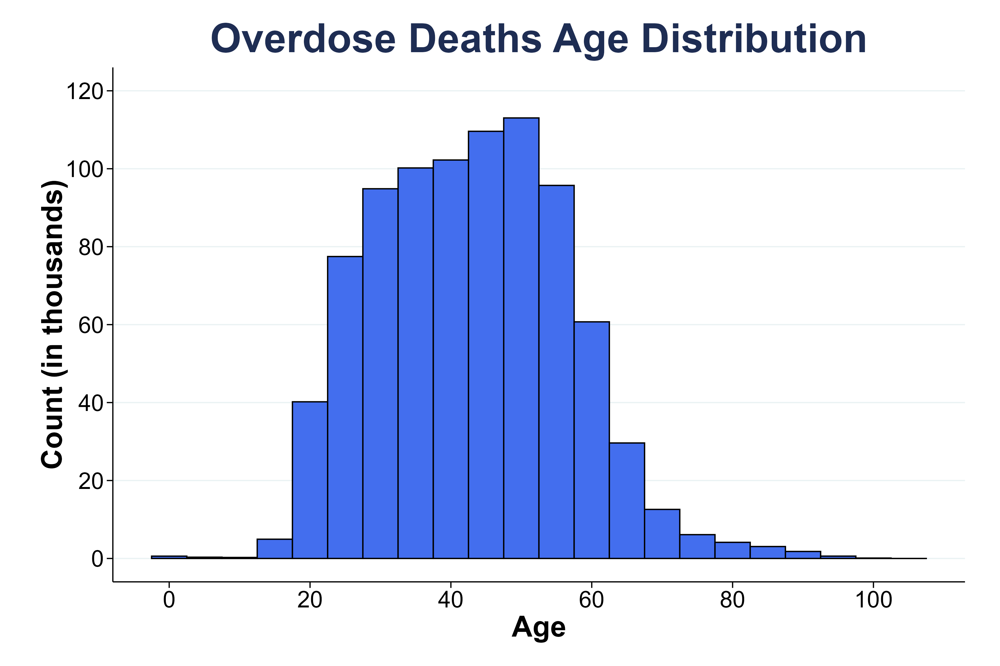
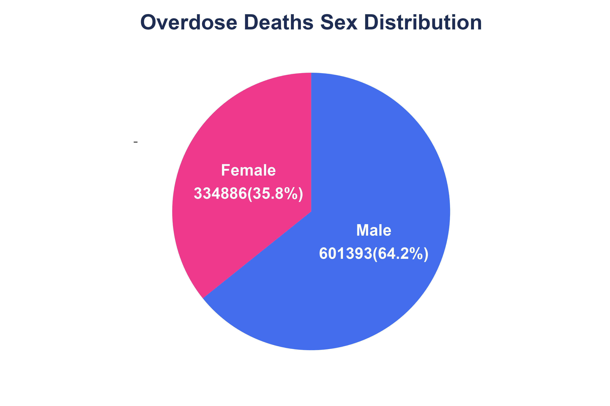
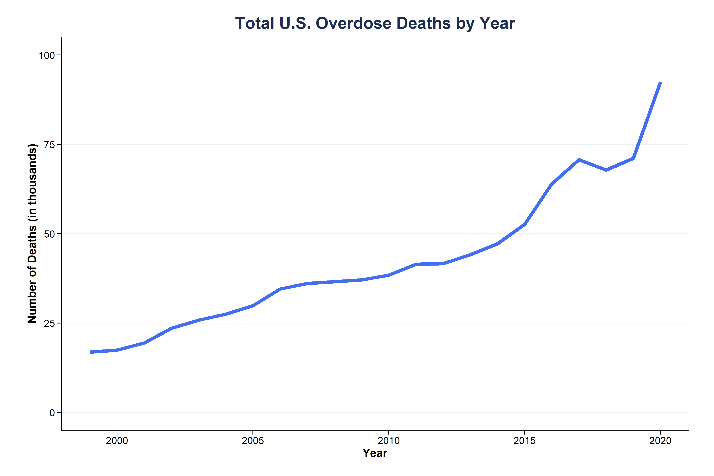

Exploratory Analysis of NVSS Multiple Cause-of-Death Mortality Data
Population
 
Total Overdose Deaths in the U.S. (1999-2020)
Overdose deaths defined by the following ICD-10 Underlying Cause of Death (UCOD) codes:
| Code | Description |
|---|---|
| X40–X44 | Unintentional/Accidental poisoning by drugs and other biological substances |
| X60–X64 | Suicide/Intentional self-poisoning by drugs and other biological substances |
| X85 | Assault/Homicide by drugs, biological substances, and other substances |
| Y10–Y14 | Undetermined intent, Poisoning by drugs and biological substances |

Top 10 ICD-10 Codes (1999-2020)
See results/top_icd-10_tables for top 20 ICD-10 codes in each year.
| Rank | Code | Description |
|---|---|---|
| 1 | T509 | Other and unspecified drugs/medicaments (Acidifying agents, Alkalyzing agents, Immunoglobulin, Immunologicals, Lipotropic drugs, Parathyroid hormones and derivatives) |
| 2 | X42 | Accidental poisoning by narcotics/psychodysleptics (Incl. Cannabis, Cocaine, Codeine, Heroin, Lysergide, Mescaline, Methadone, Morphine, Opium) |
| 3 | X44 | Accidental poisoning (unspecified drugs) |
| 4 | T404 | Other synthetic narcotics (Pethidine) |
| 5 | T402 | Other opioids (Codeine, Morphine) |
| 6 | T405 | Cocaine |
| 7 | T401 | Heroin |
| 8 | F191 | Mental/behavioral disorders due to psychoactive substance use (Harmful use) |
| 9 | T424 | Benzodiazepines |
| 10 | T436 | Psychostimulants with abuse potential |
This summary is not a unique number of deaths; Number of occurrences includes duplicates, for death certificates with multiple ICD-10 codes.
Substances of Interest:
Opioids Stimulants Marijuana Hallucinogens Benzodiazepines Barbiturates Tranquilizers Antidepressents
Polysubstance Prevalence
Exclude the intent UCOD codes (X40-44, X60-64, X85, Y10-14) from the record_* columns
Appendix
Data Source
NBER/NVSS Multiple Cause-of-Death Data
- Multiple Cause-of-death Mortality Data from the National Vital Statistics System (NVSS) of the National Center for Health Statistics (NCHS)
- National Bureau of Economic Research Public Use Data Archive
- Downloaded on 4 September 2025